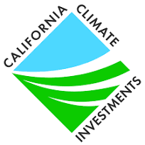
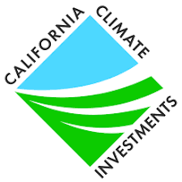
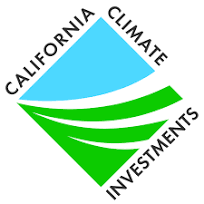

John Doe
I am Nazish Sardar, a dynamic and detail-oriented professional with a solid background in biology and general science. Currently, I am aspiring to contribute to a welcoming coffee shop experience and seeking a position as a Starbucks Barista. I am proficient in MS Office tools such as Word, Excel, PowerPoint, and Outlook, as well as Google Drive. Additionally, I am fluent in both English and Urdu, with conversational fluency in Pashto, adding a valuable linguistic dimension to my skill set.
In my role as a California Climate Investment Ambassador based in Sacramento from February 2019 to 2022, I played a pivotal role in creating a warm and inviting atmosphere at community events. This involved not only greeting and engaging with diverse attendees but also delivering engaging presentations to effectively communicate the program's objectives and sustainability initiatives. My strategic use of organizational skills ensured the seamless scheduling and management of appointments with community organizers, enhancing the overall coordination of events. My proactive approach extended to the distribution of eye-catching flyers, significantly contributing to increased program awareness and participation. Moreover, the provision of detailed reports on presentations and flyer distributions played a crucial role in my data-driven decision-making, highlighting my analytical capabilities.
As the Founder and President of the Research Club at El Camino College from May 2021 to June 2022, I demonstrated strong leadership qualities. This involved facilitating seminars with professors and guest speakers to empower students in enhancing their research skills. By forging partnerships with other universities and institutions, I provided valuable research opportunities to club members, fostering a culture of collaboration and innovation. Engaging in collaborative DNA extraction research and data analysis projects with peers showcased my commitment to hands-on learning and the pursuit of knowledge. Equally noteworthy was my role in mentoring and guiding fellow students in their research applications, highlighting not only my technical expertise but also effective communication and leadership skills.
In my capacity as a Tutor at various locations in Los Angeles from August 2018 to the present, I have been delivering personalized tutoring in Math and English. This role required the creation of a supportive and conducive learning environment through the application of strong interpersonal skills to connect with students of different ages. I efficiently coordinated study sessions by liaising with students, ensuring consistent and compelling learning experiences.
Beyond my professional experiences, my achievements and activities further underscore a commitment to excellence. As the Founder and President of the Research Club at El Camino College, I played a pivotal role in fostering a culture of research and collaboration. Awards such as the Best Debater Award, Pillar of Responsibility Award, and recognition for English achievement at North Torrance High showcase my well-rounded capabilities. Participation in activities like the Forensics Team, Vice President of MSA, and President of the Muslim Students Association Club at El Camino College, along with Dean’s List recognition, highlight my dedication to both academic and extracurricular pursuits.
In conclusion, my diverse experiences and achievements exemplify a dedicated and accomplished individual. With a strong commitment to community engagement, leadership, and academic excellence, I am well-equipped to bring a unique skill set and enthusiasm to the Starbucks Barista position.
Experience
Research Club President and Founder
•Facilitated seminars with professors and guest speakers to empower students in enhancing their research skills.
• Forged partnerships with other universities and institutions, offering research opportunities to club members.
• Demonstrated exceptional communication and leadership abilities while mentoring and guiding fellow students in their research applications.
California Climate Investment Ambassador
• Created a warm and inviting atmosphere by greeting and engaging with diverse attendees at community events.
• Effectively communicated the program's objectives and sustainability initiatives through engaging presentations.
Personal Tutor
• Delivered personalized tutoring in Math and English, creating a supportive and conducive learning environment.
• Employed strong interpersonal skills to connect with students of different ages, building trust and rapport.
• Organized study sessions by efficiently coordinating appointments with students, ensuring consistent and compelling learning experiences.
Education
El Camino College
University of California Riverside
Portfolio


 

